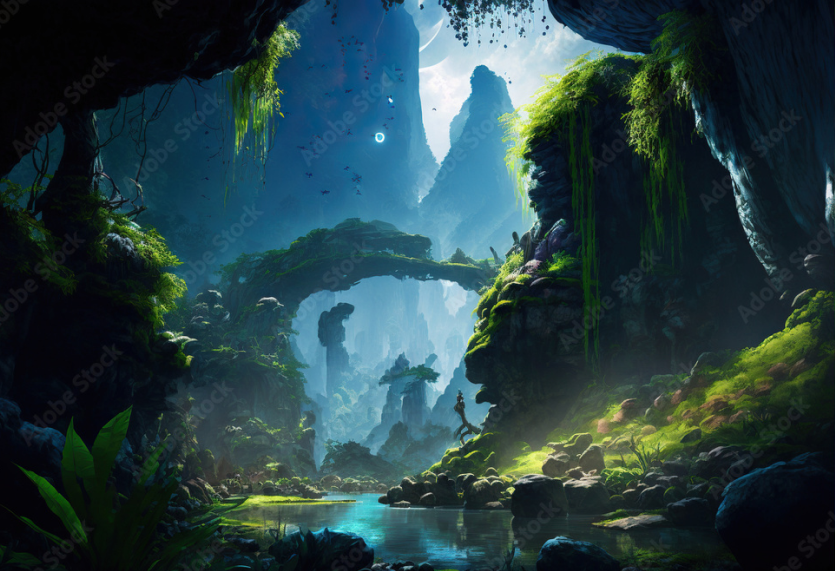

Produccion

James Cameron, el productor de la película, escribió el guión de la película en tan solo dos semanas, combinando elementos preexistentes que ya existían sobre Avatar.
La historia sigue a Jake Sully, un exmarine paralítico seleccionado para participar en el programa Avatar, un proyecto que permite a los humanos controlar cuerpos biológicamente creados con ADN Na'vi. Su misión es infiltrarse entre los nativos para facilitar la extracción de un valioso mineral.
Su intención en un primer momento era lanzar la película en 1999, pero consideró que la tecnología de la época no era lo suficientemente avanzada como para realizarla cómo se la había imaginado. Por ello pospuso su filmación hasta aproximadamente el año 2005.
Lo interesante de esto, es la manera en que Cameron se enfocó en todos los detalles, por ejemplo desarrollando la cultura na’vi, tomándose el tiempo de crear el propio idioma de la raza alienígena junto al lingüista Paul Frommer. El idioma na’vi tuvo incidencias del idioma amhárico de Etiopía y del maorí, hablado en Nueva Zelanda.

Como mencioné anteriormente, la película se demoró debido a la falta de desarrollo de la tecnología cinematográfica.
El director trabajó en una tecnología de captura de movimientos llamada Motion Capture, la cual no solo registraba los movimientos corporales sino también las expresiones faciales.
- Reconocimiento corporal: los actores utilizaron trajes bien ajustados al cuerpo, que contaban con sensores.
- Reconocimiento facial: los actores no solo contaban con una cámara facial que apuntaba directamente a la cara del actor, sino también marcadores faciales (puntos pintados en el rostro) que servían de referencia para el software y así poder capturar mejor la geometría y el movimiento de la cara.
Una vez que capturaban toda esta información, el software lo aplicaba sobre un modelo 3D del personaje, lo que permitía que tanto los gestos como los movimientos de los actores se vean reflejados en sus avatares azules con total fidelidad y en tiempo real.

Otro dato muy interesante en la creación y producción de Avatar es que Pandora, el lugar donde se desarrolla la película, es un planeta imaginario. Por eso, casi todas las escenas que se ven, fueron generadas por una computadora, utilizando herramientas de modelado y animación 3D de alta resolución.
La creación de Pandora estuvo en manos de Weta Digital, quienes también fueron parte de la producción de El Señor de los Anillos.
Avatar implicó un antes y un después en el mundo cinematográfico, ya que estableció nuevos estándares en:
- La tecnología de simulación y captura: ya que lograron expresiones faciales humanas en criaturas no humanas.
- La integración de actores con entornos digitales: conectando la actuación con la dirección de arte digital.
- La dirección cinematográfica: ya que en tiempo real se podía ver una versión digital de lo que se estaba filmando.
Pero también marcó el inicio de una era donde los mundos digitales dejaron de ser secundarios y pasaron a ser el núcleo visual y narrativo.